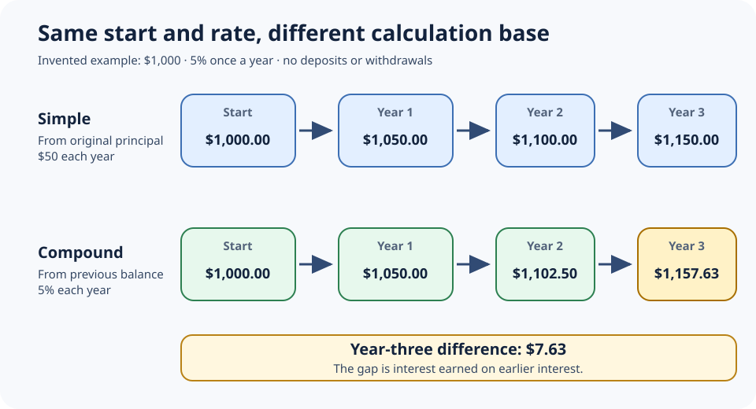

01 · Predict
Two paths start together
Imagine an invented $1,000 balance earning 5% once a year. No money enters or leaves. Both paths reach $1,050 after year one. Predict which ends higher after year three, then trace the boxes.

Text equivalent: Simple: $1,000 → $1,050 → $1,100 → $1,150. Compound: $1,000 → $1,050 → $1,102.50 → $1,157.63. The year-three difference is $7.63.
02 · Foundation
Name the moving parts
Principal
The starting amount used in the calculation. In this example it is $1,000.
Interest rate
The percentage applied to the calculation base. Five percent is written as 0.05.
Compounding frequency
How often earned interest is added before the next calculation. Our example compounds once a year.
Simple interest keeps using the original principal. Compound interest uses the previous balance, so earlier interest becomes part of the next base.
03 · Worked example
Calculate before rounding
| Year | Simple-interest balance | Compound balance | Compound calculation |
|---|---|---|---|
| 0 | $1,000.00 | $1,000.00 | Starting principal |
| 1 | $1,050.00 | $1,050.00 | $1,000 × 1.05 |
| 2 | $1,100.00 | $1,102.50 | $1,050 × 1.05 |
| 3 | $1,150.00 | $1,157.63 | $1,102.50 × 1.05 = $1,157.625 |
Field wisdom: Keep the unrounded balance through the calculation, then round the displayed currency amount. Real institutions follow their disclosures and applicable rules; this worksheet is not their ledger.
04 · Compare honestly
A rate is not the whole offer
Write down the starting balance, rate, whether the rate can change, compounding frequency, time, deposits and withdrawals. Then list what the example excludes: fees, taxes and inflation. Regulation DD distinguishes an interest rate, which does not reflect compounding, from APY, an annualized measure based on interest and principal under stated assumptions.
For investments, an estimated return is not a promised rate. For deposit accounts, read the institution’s APY, minimum-balance, fee and withdrawal disclosures rather than substituting this classroom example.
05 · Practice
Your 20-minute rate card
- Choose an invented starting principal and annual rate. Keep the rate fixed for the exercise.
- Calculate three years of simple interest, then three years compounded annually. Record every balance.
- Change exactly one input in Investor.gov’s calculator. Note what changed and what remained outside the model.
Success: another person can reproduce your result and point to every assumption.
Knowledge check
- Why are the two balances equal after year one?
- Where does the extra $2.50 after year two come from?
- Does a three-year result prove the same rate will continue?
Reveal answer guidance
- Both first calculations apply 5% to the same $1,000 starting amount.
- The compound path earns 5% on the $50 of first-year interest: $2.50.
- No. This is a fixed-rate arithmetic example, not a forecast or product promise.
06 · Next steps
Check the consumer guidance
CFPB’s written example explains the first two years using the same principal and rate. Regulation DD’s APY appendix shows the assumptions behind deposit-account disclosures. Claim mapping and dates are in the source ledger.